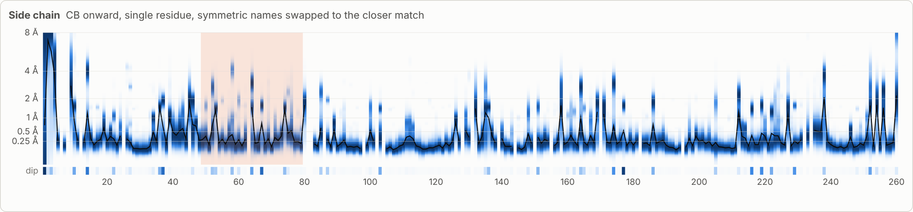
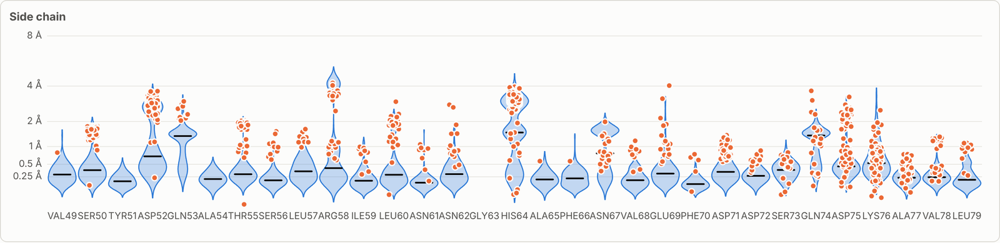
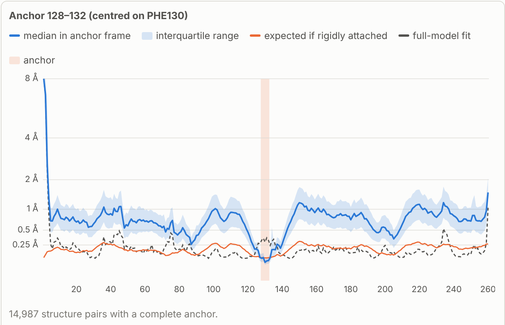
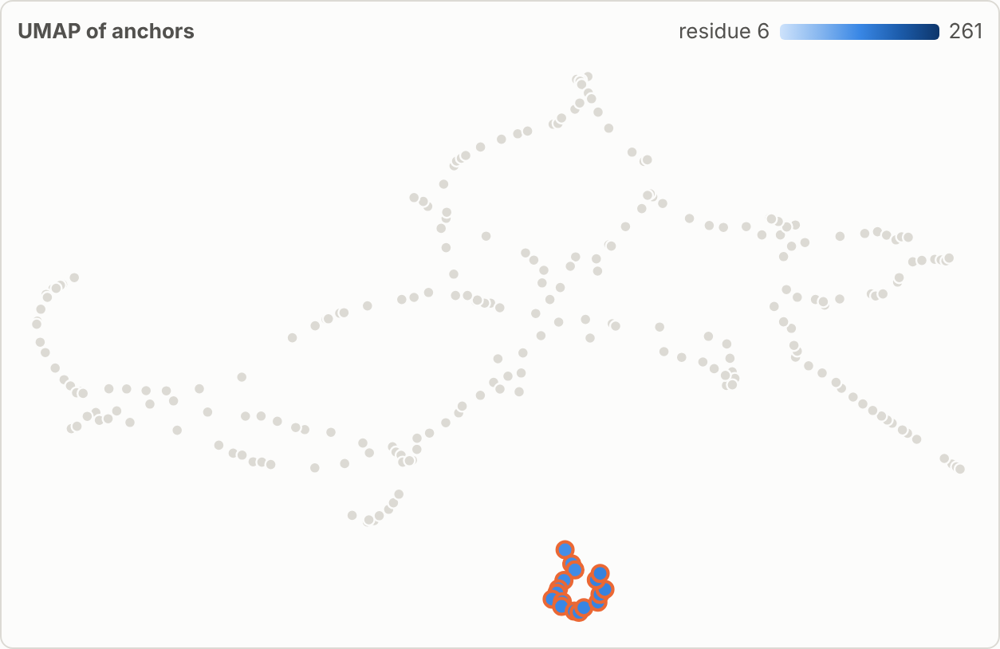
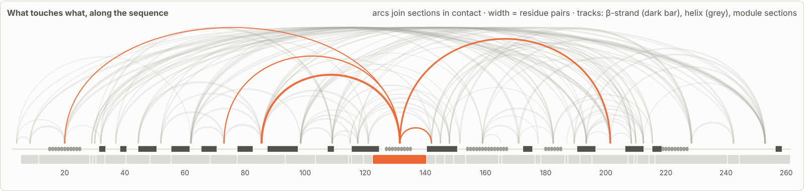
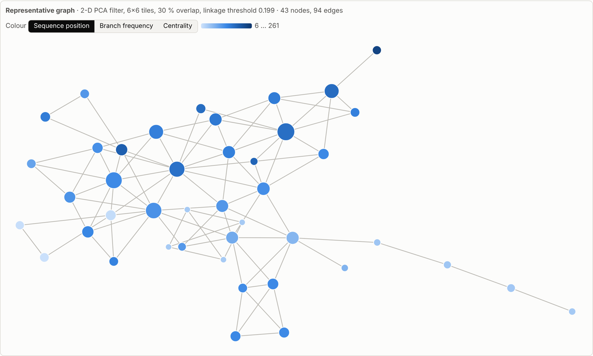

1,178 crystals of one enzyme
Human carbonic anhydrase II has been crystallised more than a thousand times in the same crystal form, almost always with something bound in its active site. Each of those depositions is a separate measurement of the same protein in the same lattice. So instead of asking what the structure is, we can ask a different question: what differs from one crystal to the next, and does any of it hang together?
This post walks through what came out of that, including two attractive patterns that did not survive a closer look.
Residue numbers below follow the conventional CA II numbering, which skips residue 126. The linked interactive reports number by UniProt, so from 126 onwards their numbers are one lower.
Putting a thousand crystals in one frame
The first step is bookkeeping. Starting from every unit cell in the PDB, entries of the same protein are grouped into crystal forms by comparing their lattices, and every member is then placed on the setting and origin of one reference entry, with the reindexing, origin shift and symmetry choice worked out exactly. For carbonic anhydrase II the largest form, in P21, has 1,182 entries; 1,178 of them place cleanly on the reference, 3K34.
The placement step also produced a list of everything that makes such alignments fail or mislead: renumbered constructs, fusion chains, pseudo-symmetric lattices, chained clusters, centring ambiguities. That list is now a small ontology of alignment issues, and this analysis added a few residue-level entries to it.
Once everything sits in one frame, the lattice turns out to matter little here: placement in the crystal adds about 0.1 Å to the typical per-residue difference. Comparing the crystals as given or after fitting each pair on the whole molecule gives medians of 0.27 and 0.18 Å per main-chain residue.
Reading the spread residue by residue
For each residue I compared every crystal with every other one, about 700,000 pairs, on the main chain of a three-residue window and, separately, on the side chain. All-to-all comparison matters: a residue that flips between two states has its ensemble average sitting between them, so distances to the mean look unimodal and the two states disappear. Pairwise distances keep them, as one mode near zero (same state) and one at the separation (different states).

Most of the protein is tight. The variation sits in a few loops (the N-terminus, 42–46, 74–76, 233–236) and, more interestingly, in side chains that switch between two fixed states. His64, the proton shuttle, is the clearest case: its pair distribution has quartiles of 0.43 and 2.97 Å, and its upper mode matches the 3.0 Å separation between the "in" and "out" conformers that are often modelled together within a single crystal. Glu14, Asp52, Asp165, Asp175, Asn253 and Glu239 behave the same way. The active-site pocket itself, Val143, Leu198 and Phe131, sits at the noise floor across all of these mostly ligand-bound structures.

Two lessons came out of His64 that apply well beyond it. First, altloc letters mean nothing between depositions: matching conformers by geometry agrees with matching them by letter only 53 % of the time. Second, whether the minor state is modelled at all depends on resolution, in about half the entries below 1.6 Å and in 9 % above 2 Å, so modelled occupancies are not population estimates. Within one resolution band the populations do differ in a physically sensible way: His64 is "in" in 45 % of room-temperature crystals and 26 % of cryo-cooled ones at 1.6–2.0 Å. The room-temperature crystals also form their own cell island, with c at 72.9 Å against 72.1 Å.
Moving the reference frame
Fitting on the whole molecule asks how each residue deviates from the average shape. I also wanted to know what moves together. So for every five-residue window I fitted each pair of crystals on that window alone and read every other residue in that local frame: residues that move rigidly with the anchor stay close, others drift.
There is a catch. A five-residue fit has a poorly determined rotation, and the error grows with the lever arm, so raw values rise with distance from the anchor even for perfectly rigid attachment. Following the spirit of Schneider's error-scaled difference distance matrices, each value is divided by the deviation expected if the residue were rigidly attached, given the anchor's own fit residual and geometry. On simulated noise-only ensembles that ratio comes out at 1.0 at every distance.

The striking result is that nothing is rigid at this precision. Relative to any five-residue anchor, the rest of the molecule deviates by two to five times the rigid-attachment expectation. The differences between crystals are small (tenths of an ångström) but smooth and coherent over the whole protein, a continuous deformation field rather than a few rigid domains with hinges.
What moves with what
Each anchor's row, how the whole protein looks from that window, is a fingerprint. Embedding those fingerprints groups anchors that share a frame, and the grouping mostly reproduces the fold: anchors that are close in space have similar fingerprints (rank correlation 0.60 with distance in space, 0.23 with distance in sequence), and the groups are compact patches on the structure. Measured against residue contacts, 53 % of contacts fall inside a group, compared with 23 ± 4 % when the same pieces are shuffled along the chain.

One piece breaks that pattern. The segment 123–140, the short helix that forms the hydrophobic wall of the active-site entrance, separates as its own group under every variation of the analysis I tried. It shifts as a block relative to the rest of the protein, together with the strand edges it packs against (84–91, 120–122, 141), even though its own backbone spread is modest.

Two kinds of "floppy" region show up once the graph is compared with B-factors. The 42–48 loop and the 230s loop are peripheral in the analysis and among the most disordered within every crystal; that is ordinary loop floppiness. The 130s segment and the loop carrying His64 are just as peripheral, yet well ordered within each crystal: each crystal holds them firmly, but different crystals hold them in different places. Both have known roles: the 130s wall is where inhibitor tails pack and where carbonic anhydrase isoforms differ, and His64 shuttles protons. The zinc site and its second shell, by contrast, sit firmly in the common core frame.
Two things that did not hold up
Junctions. The embedding has threads that cross, and it is tempting to read the crossings as special residues where several parts of the protein meet. They are not. The crossing points move between random seeds (agreement 0.45), and a version of the score computed on the real distances has no relation to any structural property I checked. A Mapper graph of the same fingerprints, which avoids squashing everything into two dimensions, shows why: the anchors form one loop-rich mesh, not a tree with branch points. The real arms are the mobile chain ends and loops, such as the 42–49 loop.

Concerted side chains. Testing which switchable side chains change state together across crystals first gave 968 "significant" pairs out of 2,016, most of them 20–40 Å apart. Almost all of that is model lineage. About 58 entries, mostly deposited in the early 1990s and largely refined with PROLSQ, share the same alternative leucine and glutamate orientations everywhere, presumably inherited from a common starting model. Controlling for deposition era and refinement program, and then for lineage clusters learned from the data, shrinks the list to 83 pairs. As it shrinks, the survivors move towards residues in contact, which is what real coupling should look like. Among them is a small network around Asp75, Lys80, Thr87 and Arg89, on the strand edge that packs against the 130s unit.
The lineage effect is the most useful negative result here. Any "ensemble from the PDB" carries the history of how its models were built, and that history can look exactly like correlated motion.
Where this goes next
The obvious next step is to rerun everything on PDB-REDO models, which are re-refined and rebuilt with one consistent pipeline. That should strip most inherited model choices, with one caveat: entries without deposited structure factors cannot be re-refined, and many of the 1990s entries are among them. The comparison therefore has to be made on the entries both sets share.
The other open question is whether the 130s and His64 heterogeneity is intrinsic or follows what is bound. Most of these crystals are inhibitor complexes, and some carry engineered variants such as F131V. If the displacement persists in ligand-free wild-type crystals, it is intrinsic and plausibly functional; if it follows the ligand, the analysis is mapping how the protein adapts to what it binds. Either is worth knowing.
More broadly, a well-sampled crystal form is a population, not a replicate. Treating the spread as signal, with a careful eye on what the model-building history puts into it, is a cheap way to see which parts of a protein are free to change.
Explore
- Per-residue spread — density strips and violins for every residue, as given and after fitting.
- Local frames — every residue in every anchor's frame, raw and noise-scaled.
- Groups on the fold — the anchor groups against contacts, β-sheet order and sequence.
- Mapper graph — the anchor graph across 36 settings.
The reports are large (up to about 2.5 MB) and use UniProt numbering.